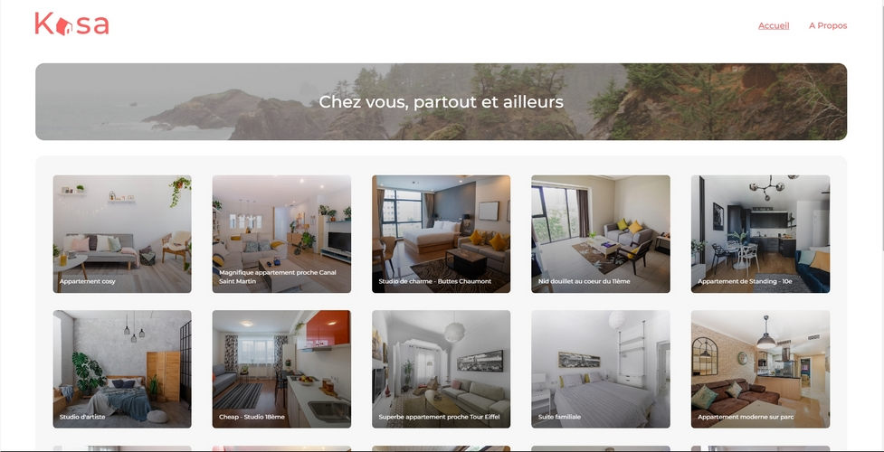

Missions à OpenClassrooms
Dans le cadre de ma formation de Développeur Front End, je devais valider 14 projets contractuellement dont 11 projets de développement d'interfaces de sites et d'applications web sous forme de missions. J'ai été mentoré une fois par semaine par un expert en développement web durant la réalisation de mes missions. Deux des 14 projets concernaient la réussite à des tests techniques. Un des 14 projets concernait les techniques de gestion du temps et des priorités ainsi que les techniques de veille informationnelle. Je présente ci-dessous un résumé du contexte des missions. Chaque projet a un lien Github et certains projets ont un lien vers des maquettes Figma.
Projet Reservia
Reservia est une petite entreprise proposant un outil de planification de vacances. Elle souhaite créer un site
Web qui permet à ses clients de trouver des hébergements et des activités dans la ville de leur choix. Les
hébergements peuvent également être filtrés par thématique, par exemple leur budget ou leur ambiance. Pour cela,
nous disposons de deux maquettes en fichiers .PNG fournies par le Designer UI: une version desktop et une version
mobile. Nous disposons également de photos de plusieurs tailles. Il s'agit de transformer ces maquettes en un
prototype HTML/CSS responsive qui s'adapte aux écrans d'ordinateurs, de tablettes et de smartphones. Le site doit
passer le validateur W3C avec succès.
Technologies utilisées : HTML5, CSS3, CSS Flexbox, Affinity Designer pour l'aide au découpage et la récupération
des dimensions.
Github du projet : Projet Reservia
Projet Ohmyfood
Ohmyfood est une jeune startup qui voudrait s'imposer sur le marché de la restauration. L'objectif est de
développer un site 100% mobile qui répertorie les menus de restaurants gastronomiques. En plus des systèmes
classiques de réservation, les clients pourront composer le menu de leur repas pour que les plats soient prêts à
leur arrivée. Finis, les temps d'attente au restaurant ! Pour cela, nous disposons de cinq maquettes en .PNG
fournies par l'UX Designer de l'entreprise: une page Accueil et quatre pages menu (une par menu). Nous disposons
également de quatre photos des quatre menus. Il s'agit de transformer ces maquettes en un prototype HTML/CSS
responsive qui s'adapte aux écrans d'ordinateurs, de tablettes et de smartphones. Le site doit passer le validateur
W3C avec succès. Il doit y avoir des animations sur certains éléments des pages. À cet effet, deux vidéos des
animations attendues sont fournies.
Technologies utilisées : HTML5, CSS Flexbox, CSS Grid-Layout, CSS Animation, Sass, Affinity Designer pour
l'aide au découpage et la récupération des dimensions.
Github du projet : Projet Ohmyfood
Projet GameOn
J'ai été récemment embauché comme Développeur Front-End junior dans une PME, GameOn, spécialisée dans les
conférences et les concours de jeux. Un précédent développeur avait commencé à développer un formulaire
d'inscription pour un concours de jeux à partir de maquettes Figma. Mais ce développeur a changé d'entreprise
entre-temps. Ma mission consiste à ajouter le code JavaScript manquant pour que le formulaire soit pleinement
fonctionnel: fermeture de la modale du formulaire, contrôle et validation des champs, création de la modale de
succès si les données saisies sont conformes aux critères de validation. Je dois aussi corriger des erreurs
d'affichage pour la version mobile.
Technologies utilisées : HTML5, CSS3, JavaScript, Figma.
Github du projet : Projet GameOn
Projet FishEye
Depuis quelques semaines, je suis développeur junior chez Techasite, une société de conseil spécialisée dans le
développement de sites web et d'applications mobiles. Ma mission est de créer le prototype fonctionnel d'un nouveau
site web, FishEye, qui est un site web qui permet aux photographes indépendants de présenter leurs meilleurs
travaux ainsi que leur tarif. Ce site web doit être accessible, c'est-à-dire qu'il doit être navigable au clavier et via des lecteurs d'écran et les vidéos doivent être sous-titrées. Il doit être réalisé en HTML + CSS + Vanilla Javascript. Pour cela, je dispose de maquettes Figma, de notes de réunion détaillant les principales fonctionnalités et les contraintes techniques, des exemples de photos et de vidéos, des données au format JSON, ainsi qu'une partie du code HTML et du CSS déjà mis en place par un autre collègue sur un dépôt Github à forker. L'usage de Design Patterns tel que le Pattern Factory est recommandé. Le Pattern Constructor s'impose aussi pour la modélisation des données. Remarque: j'ai développé ce projet en Programmation Orientée Objet (POO).
Technologies utilisées : HTML5, CSS3, JavaScript, jQuery, POO, API/JSON, Figma, Accessibilité, NVDA, le Narrateur
Windows, Factory Pattern, Constructor Pattern, Proxy Pattern, Observer Pattern (publisher/subscriber).
Github du projet : Projet FishEye
Projet "Les Petits Plats"
Ce projet consiste à réaliser un site Web pour l'entreprise "Les Petits Plats". C'est un site de recettes de
cuisine à l’instar de Marmiton ou 750g. Le site doit être doté d'un moteur de recherche avancé et performant, avec
un temps de réponse presque instantané. Je dois réaliser la partie front-end à l'aide d'un fichier JSON contenant 50
recettes. Je dispose également de maquettes Figma et d'un cas d'utilisation détaillé avec plusieurs scénarios. Le livrable doit passer le validateur W3C avec succès.
Remarque : J'ai réalisé une fiche d'investigation pour le champ de recherche principal pour déterminer la solution à
retenir pour obtenir un moteur de recherche le plus rapide que possible. J'ai dû choisir entre soit la méthode
filter de l'objet Array soit la boucle For/Of soit la boucle For. J'ai élaboré un algorigramme pour chacune de ces
possibilités. Après l'étude réalisée à l'aide de JSBench.me, j'ai retenu la méthode filter. J'ai créé une branche
git pour chaque cas.
Technologies utilisées : HTML5, CSS3, Sass, JavaScript, POO, API/JS, Algorigrammes, Draw.io, Figma, JSBench.
Github du projet : Projet "Les Petits Plats"
Projet Billed
Billed est une entreprise qui produit des solutions Saas destinées aux équipes de ressources humaines. Dans ce projet, il s'agit de la partie frontend d'une application permettant de gérer des notes de frais. D'une part, il y a une interface pour les employés qui leur permet d'avoir un historique de leurs notes de frais, et de créer de nouvelles notes de frais. D'autre part, il y a une interface pour les administrateurs qui leur permet de valider ou de refuser ou de mettre en attente les notes de frais des employés. Je dois fiabiliser la partie frontend par la correction de bugs et la réalisation de tests unitaires, de tests d'intégration et de tests End-to-End manuels. Je dois aussi élaborer le plan des tests manuels End-to-End. La partie backend est fournie sur Github avec les instructions d'installation.
Technologies utilisées : HTML5, CSS3, JavaScript, jQuery, Bootstrap, API/SQlite, Jest.
Github du projet : Projet Billed
Projet Learn@Home
L'entité cliente dénommée Learn@Home est une association qui met en relation des enfants en difficulté scolaire avec
des tuteurs bénévoles. En gros, leur objectif est de permettre à tout élève, où qu'il soit, d'avoir accès à un
soutien scolaire à distance. Ils veulent permettre à leurs élèves et à leurs bénévoles de communiquer plus
facilement, directement depuis leur site web. Jusqu'alors ils utilisaient surtout WhatsApp et les SMS ! Learn@Home
souhaite travailler avec nous sur toute la conception de son site web. Le site web est doté notamment d’une messagerie instantanée, d’un calendrier et d’un gestionnaire de tâches.
Vous êtes le lead développeur de l'entité web. Votre rôle est de cadrer ce projet puis de coordonner tous les
développements avec l'équipe. Vous devez définir les besoins du client, avant démarrage du développement logiciel pur.
Nous avons prévu une nouvelle réunion dans quelques semaines avec Learn@Home. L'objectif est de leur présenter les
éléments suivants :
1. Le.s diagramme.s de cas d'usage pour chacune des fonctionnalités majeures de chaque page (connexion, chat,
calendrier, gestionnaire de tâches, tableau de bord).
2. Les user stories avec critère.s d'acceptation pour chacune des fonctionnalités, partagées dans un format
standard (PDF, DOCX, XLSX).
3. Les maquettes du site avec un design simple et au moins une maquette par page (Vous pouvez utiliser Figma ou
Sketch et il faudra expliquer la navigation entre les pages pendant le meeting). Remarque: j'ai aussi réalisé les
prototypes avec Figma en version desktop et mobile afin que le client ait une vision plus concrète du produit et de
faciliter sa présentation.
4. Un Kanban découpant le projet, de manière macro (détails techniques exclus) en blocs de fonctionnalités et
sous-fonctionnalités pour le développement. J'ai démarré le découpage dans ce kanban sur Notion, à vous de finir de
compléter la colonne ANALYZE sur le même modèle. Vous pouvez travailler sur Notion, Trello ou GitHub. Je vous envoie
un document dans lequel j'ai synthétisé les attentes du client. Vous y trouverez nos prises de notes et quelques
croquis. Bien sûr, il faudra fournir les maquettes pour desktop et mobile.
Technologies utilisées : Figma (diagramme, maquettes et prototypes), Trello, Kanboard, Github Kanban.
Github du projet : Projet Learn@Home
Projet Kasa

Kasa est une entreprise qui est dans le secteur de la location d’appartements entre particuliers depuis près de 10
ans maintenant. Avec plus de 500 annonces postées chaque jour, Kasa fait partie des leaders de la location
d’appartements entre particuliers en France. Le site de Kasa a été codé il y a maintenant plus de 10 ans en ASP.NET
avec un code legacy important. Une refonte totale de leur site web est nécessaire.
Kasa me recrute en tant de développeur Front-End pour développer une nouvelle plateforme web. Je dispose de
maquettes Figma et d'un fichier JSON contenant des données de personnes proposant une location d'appartement.
Côté Front-End, je dois utiliser ReactJS. Côté Back-End, il y aura du NodeJS.
Technologies utilisées : Create-React-App, ReactJS, JavaScript, JSX, CSS3, React-Router-Dom, composants fonctionnels, hooks, API/JSON, Figma.
Github du projet : Projet Kasa
Projet SportSee
Je travaille en tant que développeur chez SportSee, une startup dédiée au coaching sportif. En pleine croissance,
l’entreprise va aujourd’hui lancer une nouvelle version de la page profil de l’utilisateur. Cette page va notamment
permettre à l’utilisateur de suivre le nombre de sessions réalisées ainsi que le nombre de calories brûlées.
Concrètement je dois réaliser un tableau de bord analytique en React. Je dispose pour cela d'une maquette Figma et
d'un tableau Kanban avec les User Stories à intégrer dans le projet. Je dois intégrer les US de la colonne TODO.
Pour réaliser les graphiques, je peux utiliser D3 ou Recharts. Je choisi Recharts. Il y a une partie backend en
NodeJS fournie qui expose une API pour les données. Je dois aussi réaliser la documentation du projet en anglais et
produire une JSDoc.
Technologies utilisées : Create-React-App, ReactJS, JavaScript, JSX, CSS3, Sass,
React-Router-Dom, composants fonctionnels, hooks, Pattern Constructor, PropTypes, JSDoc, Recharts, API/JS, NodeJS,
Figma.
Github du projet : Projet SportSee
Projet Argent Bank
Je viens de commencer à travailler chez Remede Agency, une agence spécialisée dans le développement d'applications
web. L'équipe est principalement composée de développeurs back-end et vient de commencer à recruter d'autres
spécialistes front-end. Le projet concerne une nouvelle banque qui démarre, Argent Bank, qui essaie de percer dans
le secteur et qui a besoin d'aide pour mettre en place son application. Nous avons obtenu un contrat en deux parties
qui se décompose en plusieurs phases.
- Phase 1 : Authentification des utilisateurs
Création d'une application web permettant aux clients de se
connecter et de gérer leurs comptes et leur profil.
- Phase 2 : Transactions
Il s’agirait de spécifier les endpoints d’API nécessaires pour une éventuelle deuxième
mission une fois que nous aurons terminé la première.
Ma mission est de créer la partie front-end en React et doit être responsive. Je dois également utiliser Redux comme
gestionnaire d'état de toute l'application. Comme point de départ, je dispose du code HTML statique et du CSS pour
la page d'accueil, la page de connexion et la page de profil.
Ce que doit faire l’application (voir les détails dans les GitHub Issues) :
- L'utilisateur peut visiter la page d'accueil
- L'utilisateur peut se connecter au système
- L'utilisateur peut se déconnecter du système
- L'utilisateur ne peut voir les informations relatives à son propre profil qu'après s'être connecté avec succès
- L'utilisateur peut modifier le profil et conserver les données dans la base de données
Les ingénieurs back-end ont déjà créé toutes les APIs dont j'ai besoin. La documentation Swagger est également
disponible.
À la fin du projet, je devrai présenter les deux livrables au gestionnaire de l’équipe technique d’Argent Bank.
Technologies utilisées : Create-React-App, ReactJS, JavaScript, JSX, CSS3, Sass, React-Router-Dom, composants
fonctionnels, hooks, API/MongoDB, Figma, Swagger, configuration YAML, PropTypes, Redux, JSDoc.
Github du projet : Projet Argent Bank
Projet HRnet
Je travaille pour le département technologique d'une grande société financière, Wealth Health. Cette société utilise
une application web interne, appelée HRnet, qui gère les dossiers des employés. L'application est ancienne et
utilise jQuery côté front-end, ce qui entraîne des bugs considérables et une augmentation des plaintes en interne.
Ma mission est de faire une refonte de l'application actuelle totalement en React et de convertir un des composants
du projet en package NPM. Le style est laissé à ma convenance. J'utilise Redux comme gestionnaire d'état. Je dois également faire un test de performance comparatif entre l'ancienne version en jQuery et la nouvelle version en React afin de constater les avantages de React en terme de performance. Pour cela, je dois effectuer un audit Lighthouse pour les deux versions.
Technologies utilisées : Create-React-App, ReactJS, JavaScript, JSX, CSS3, Sass, React-Router-Dom, composants
fonctionnels, hooks, API/JS, Figma, PropTypes, Redux, JSDoc, package NPM, Lighthouse.
Github du projet : Projet HRnet
Remarque : les entreprises citées ci-dessus sont fictives mais j'étais en réelle situation professionnelle avec le suivi hebdomadaire d'un tuteur expert en développement front-end. À cet effet, j'ai acquis une certaine autonomie.